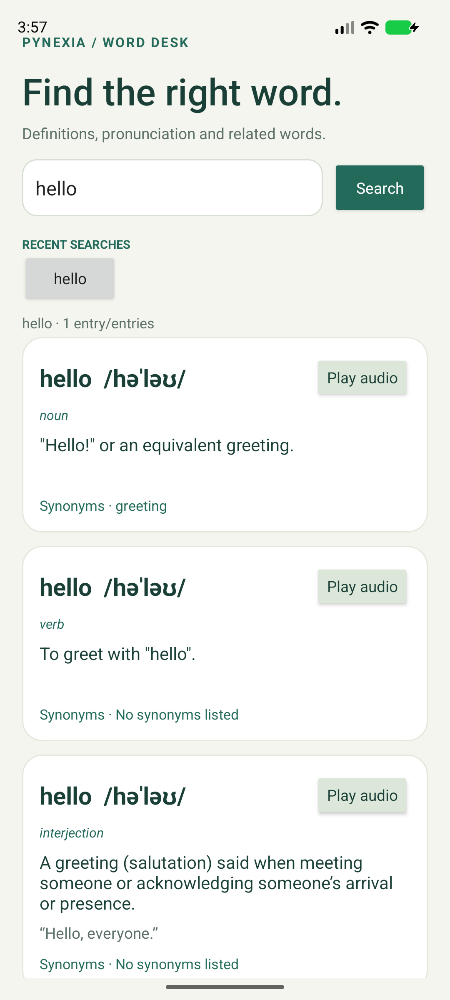

Native Android · Java + XML
Dictionary App
Find the right word.
Search English vocabulary for meanings, parts of speech, pronunciation, audio and synonyms, with a recent search history.
Project showcase · Android 8.0+ · Evaluation build.

01 / Implementation
Built around the assignment
Week 3: REST APIs, JSON parsing, asynchronous networking and native Android screens.
Read the bilingual report (PDF)Dictionary REST API
Retrofit fetches the selected word from Free Dictionary API and parses its JSON entry, phonetics and meanings.
Useful word details
Definitions include example sentences, parts of speech and synonyms when available. Tap Play audio to hear returned pronunciation.
Search history
Recent successful searches are kept on device and can be tapped to repeat a lookup.
02 / In the app
Actual Android screen

03 / Try it
Review walkthrough
- Enter an English word and tap Search.
- Read the meanings, examples and synonyms.
- Tap Play audio when a pronunciation file is available.
- Select a recent search to look up the word again.
Build status
Debug build completed
Automated tests were not run. See build and lint records in the repository.
شرح التمرين
يبحث التطبيق عن الكلمات الإنجليزية ويعرض المعاني وأقسام الكلام والأمثلة والمرادفات عندما توفرها الواجهة. يتيح تشغيل ملف النطق الصوتي إن وُجد، ويحفظ آخر عمليات البحث محليًا للعودة إليها.
04 / Submission kit
Files for your project form
Repository URL: https://github.com/ENGEyad/pynexia-week3-dictionary
Hosted URL: https://engeyad.github.io/pynexia-week3-dictionary/
Attach File / Archive: Dictionary-App.zip (760 characters of notes included below in the report)
Implementation notes
Native Android Dictionary App built with Java, XML and Retrofit. Looks up English words through the Free Dictionary REST API and parses JSON entries. Displays definitions, parts of speech, examples, synonyms and phonetics when present. Play audio starts a returned pronunciation file when available. Recent successful searches are stored locally. Run the dictionary module in Android Studio with JDK 17/21 and Android SDK 35 on Android 8.0/API 26 or later. Internet access is needed. Build: assembleDebug passed. Automated tests were not run. Lint findings are included in the repository and report. API content varies by word. Some entries may not include examples, synonyms or audio. Hosted page includes the APK, source archive, report and screenshots.